如何识别第一浪
- 什么是第一浪，一个典型的走势，第一浪一定是视觉上很大的朝一个方向的运动，这个就是第一浪。那么在第一浪发生前，
缓慢的运动，即使幅度很大，也不算第一浪。
- 前一段走势结束后，一下就从低点或者高点，大幅快速运动。那么这个就是第一浪。这个其实就是强第一浪走势
- 走势合并的方法，如果前面出现了一个两段走势，但是后面走平很久，时间超过了更早的反向走势，那么这个两段走势应该
看作是第一浪，而不是要反转的走势。
- 上一个走势结束后，大盘开始从极点缓慢的运动，运动时间很长。那么这个不是第一浪，有时候这个运动因为时间很长，
会幅度很大，但是也不是第一浪。而是准备工作。一旦大幅快速运动，才是第一浪。
- 在反向走势的范围内，有时候，它的运动不算，直到脱离反向走势范围，才是第一浪。
但是也有很多例外的情况。这个要仔细分析。和它走平的时间有关。
- 如何确定什么是第一浪？第一浪一定是冲高或者冲低后，在极点停留几分钟。或者只有哪怕一分钟。或者回调的幅度很小。
这样就坐实了一个走势。如果一下就回拉很大的幅度。那么这个就不是第一浪。
- 如果第一浪是前面的两段走势结束造成的，一定要观察，这个两段走势第二段是否很大，超过第一段。如果超过，
那么开始的反向走势是第一浪。这样即使很大，也没有关系；如果不大，反向的第一浪，就不是第一浪，而是反向加速走势，
一旦越过走平点，就会继续恢复原来的运动方向。
- 这个其实就是反常两段走势。但是它会导致一个主要走势，所以单独拿出来研究。
- 它的第一浪一开始就很快，幅度也很大。可以想见，要想让它反转，它的第二浪要更大，更快才可以。如果这样的走势一直不出现。那么走势会一直持续。
即使最后反转，也是反转一部分而已。
- 但是也要注意它是否又走平的样子。因为另外一种走势是，走平后，加速。这样不需要很大的幅度也可以反转。
- 第一浪不一定是一个走势的开始，它也可能出现在一个走势的中间。如果前面的走势结束了。那么这个走势就是第一浪。
开盘后冲高，然后不断的缓慢下跌，形成第一浪
从前面的反向走势刚结束，一开始就快速运动，这个就是第一浪
从前面的反向走势结束后，非常缓慢的运动，这个运动可能持续时间很长，而且运动幅度很大，但是不算第一浪
第一浪开始前，发生了激烈的加速反向走势
主要走势中，出现了反向的两段走势，那么随后的快速运动就是第一浪
开盘后，快速大幅的上涨或者下跌，很可能是最后一浪，然后开始反向的第一浪
开盘后快速上涨或下跌，形成了很强第一浪
发生第一浪后，立刻回调，然后创新高或新低后，走平
再次出现反向加速走势后，转折。反向加速走势幅度比第一浪小的多。
开盘后，不断的积累一个走势，然后大幅运动。
这个才是第一浪。通常这样的走势很难反转。可能一天都是如此。
跌破前面的走势的低点或者高点后，发生部分反转
如何计算第一浪的幅度
如何计算第一浪的幅度
如果第一浪本身分为两段，那么第二段应该单独计算。这样的情况，它有时候会部分反转。
超过第二段，但是不超过第一段。未来反转的时候，幅度超过第二段就可以了。如果一开始就连续运动，那么整段都是第一浪
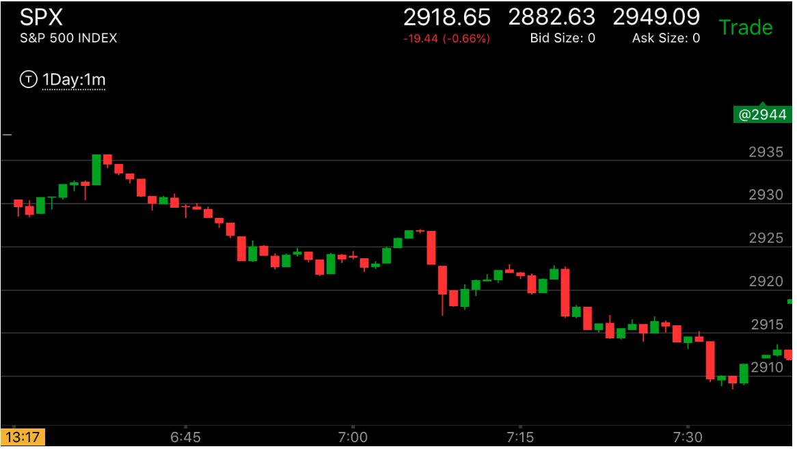

图示:开盘后，先向下，然后出现了两段上涨走势。先向下说明了上涨走势的第一段的幅度。
反转后，它在6：38从2935下来，然后在2930停止了几分钟，继续下跌。这样，它的第二段是从2930到2923.后来下跌后，
从2910到2902跌了8个点。其实7：00的下跌幅度很大，但是它立刻反弹，这样就不是底部了。因为第一浪下跌后，没有反弹，而是走平很久，
然后才冲高下跌的。而这个立刻反弹，表示向上的力量很强。那么不是底部。8：20下跌后，幅度和第一浪的第二段差不多，
但是它8：45出现了加速下跌，创新低，立刻反弹后，再次快速下跌。然后反弹很小。这样就形成了加速走势，开始反弹。
可以看到，它后来反弹的时候，越过了第二段后，没有超过第一段，就开始下跌了。
它下跌的时候，越过了11：50开始的两段上涨走势。也是部分反转了。
跌破前面的走势的低点或者高点后，发生部分反转,不是第一浪
这个走势说明，在前面走势内部运动的时候，本身的运动形状很重要，有时候，刚刚突破
前面的高点或者低点，就再次反转了。有时候则是全面反转，也有时候，这样突破后，才产生第一浪
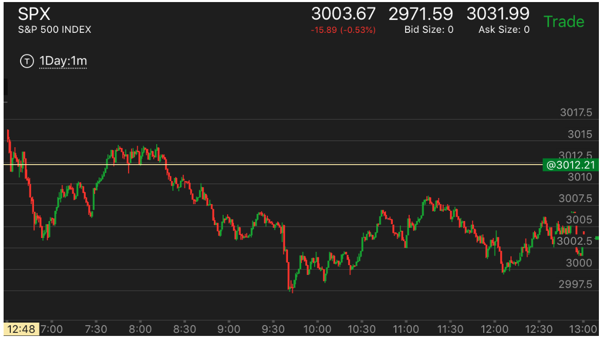
图示:9：32它大跌，越过前面的低点。似乎要形成跨越走势。但是这个走势本身反弹很小。
和前面的8：50和9：00相比，所以它本身形成了加速走势。这样，导致了部分反转。之所以是部分反转，是因为它反转是和前面的
转折相比的，不是整个跌势的开始相比。
开盘后，不断的积累一个走势，然后大幅运动。
这个才是第一浪。通常这样的走势很难反转。可能一天都是如此。
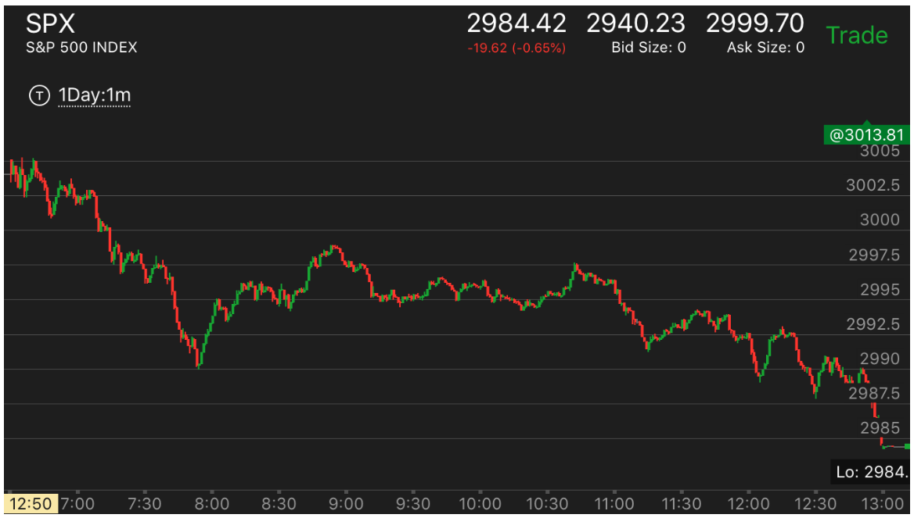
图示:开盘后震荡，然后并不明显。6：45大幅走低后，立刻反弹，然后走平。这样就表示它一定会大跌。
考虑6：45下跌的幅度。后面的下跌都不超过这个幅度。直到7：30开始大跌，这个其实才是第一浪。它在底部反转后，
开始反弹。反弹的时候，一定要超过走平点才是加速点。可以观察它在8：45开始了一个连续的上涨。第一浪很小。走平后，再次上涨。
然后拉回。然后再次上涨，走平后，再次上涨。这样就结束了。
它开始下跌的时候，一定要低于这个走势的开始阶段。也就是2994这个点。但是它下来后，始终高于这个点。徘徊了一个多小时。
才在10：40大幅下跌，低于这个点。这个就是典型的跌势走势。下跌很困难。徘徊很久，但是一旦发动，就会跌的很快。
而且10：40这个下跌是第一浪下跌。因为前面的上涨走势刚刚结束。这个下跌浪很大。所以后面不会轻易见底，一直跌倒收盘了。
发生第一浪后，立刻回调，然后创新高或新低后，走平
再次出现反向加速走势后，转折。反向加速走势幅度比第一浪小的多。
TOP
这个走势特点是第二浪比第一浪小的多，但是也反转了。关键在要在新高或者新低的位置，
走平，然后出现了反向加速，走平的位置要比第一浪更高或者更低

图示:开盘后缓慢下跌，7：00然后快速上涨，创新高.在顶部走平，这样可以判断，
它一定会跌。因为走低的时候，并没有见到底部。而上涨的速度很快。
超过下跌的速度。它一定会低于，或者到了低点附近的。从另外一个角度分析，它快速冲高后，看作第一浪，7：20下来后，
再次快速冲高，虽然幅度很小，但是是一个加速冲高的走势。这样就形成了反转。
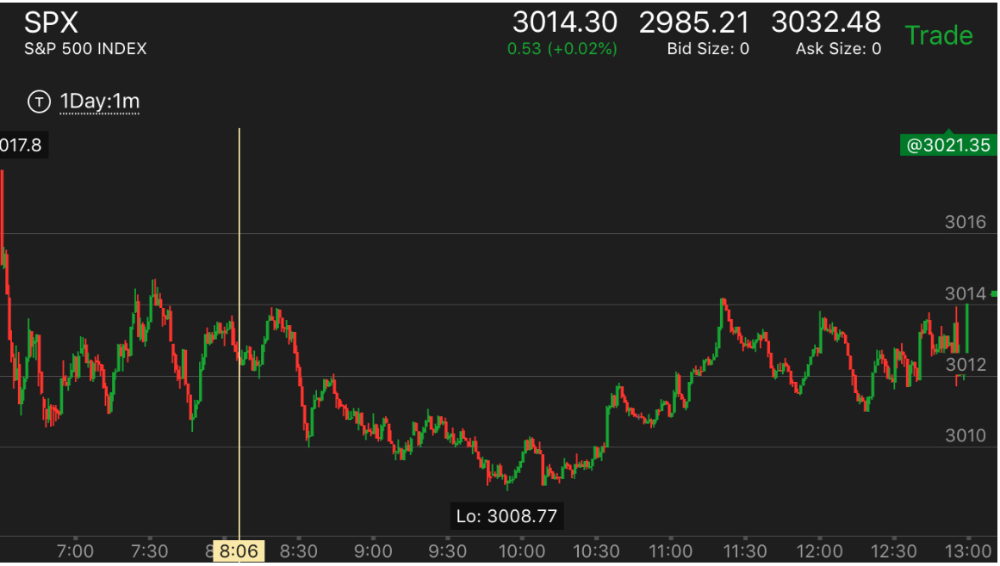
图示：8：20经历了一个两段上涨走势后，快速下跌，形成了第一浪。它立刻反弹，
然后缓慢下跌，创新低，9：40它在低点走平。这个点比第一浪要低，然后快速上涨后，以更快的速度下跌。
跌回原位。这样就是一个加速走势了。它的反弹很小，和前面第一浪反弹形成了鲜明对比。说明反转了。
这个反转是全面反转，所以它会反转第一浪。但是因为更大的走势是跌势，它在11：30刚刚越过第一浪后，就跌下来。
最后收盘也没有超过第一浪
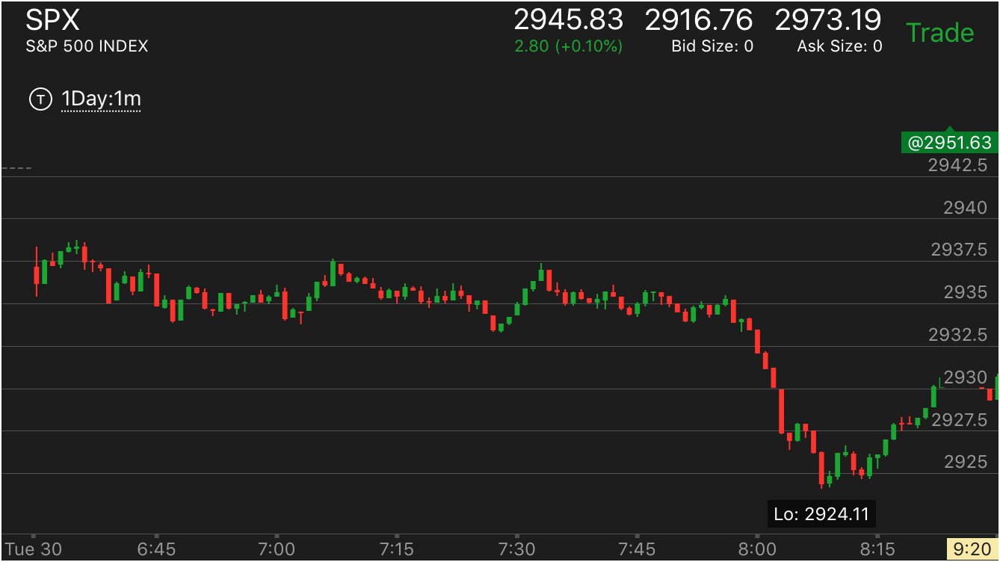
图示：开盘后，出现跌势，然后一直徘徊，到了7：55，它一下就跌了很多。但是第一浪
是7：35开始的，幅度很小，7：55已经是第二浪了。它在底部再次加速后，反转了。
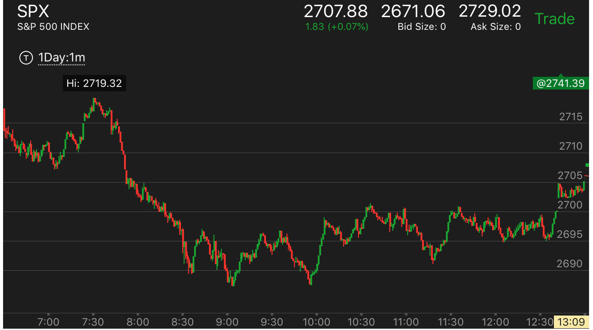
图示：开盘后不断下跌，形成第一浪。7：00出现
反弹后，下跌创新低。下跌的速度超过上涨的速度，然后缓慢上涨，和7：00的反弹比，它的反弹更慢，
这样就形成了加速。可以考虑，它反弹的速度低于下跌的速度。
所以它未来一定超过开盘点。
开盘后冲高，然后不断的缓慢下跌，形成第一浪
TOP
这两个走势的第一个bar都是冲高，随后缓慢下跌，说明这个是第一浪下跌，时间很长，幅度很大，
说明是很强的第一浪

图示:开盘后迅速下跌。它下跌的时候，非常缓慢。说明很稳健。没有加速状态

图示: 开盘后迅速下跌，然后开始震荡。要注意它最后大跌前，反弹幅度最高，然后大跌。它下跌很慢，而反弹很快。说明要跌。
开盘后快速上涨或下跌，形成了很强第一浪
TOP

图示:开盘后，冲高，然后回调，再次冲高，9：45它下来的速度很快，
真正的顶部不会如此。它反弹后，再次下来。在顶部没有积累。而它下来后，也没有新低。说明是在填补真空，
然后大涨。那么开盘其实是第一浪。
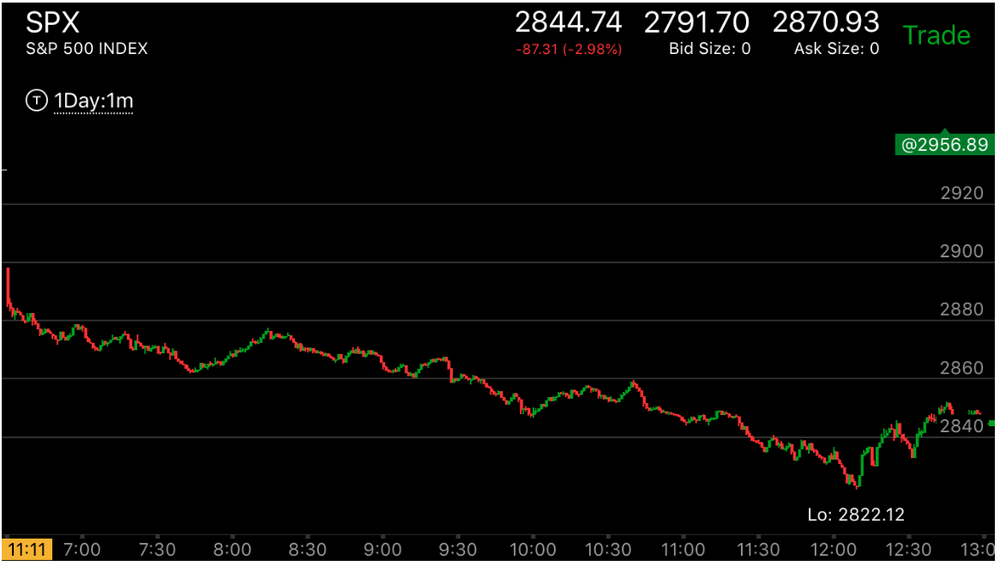
图示:第一浪很强，大幅下跌。后面一直没有出现反转。这样就不断的下跌。一直到收盘才部分反转。
开盘后，快速大幅的上涨或者下跌，很可能是最后一浪，然后开始反向的第一浪
TOP
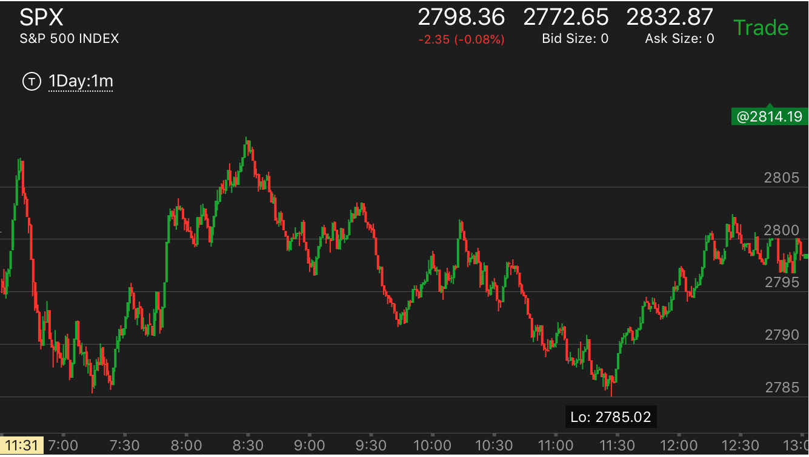
图示：开盘后两分钟下跌，然后大涨，大涨后，快速大跌。考虑两份钟的情况，那么这个大跌
就是第二浪下跌。在底部走平后，然后出现了一个小的加速走势后，大涨。
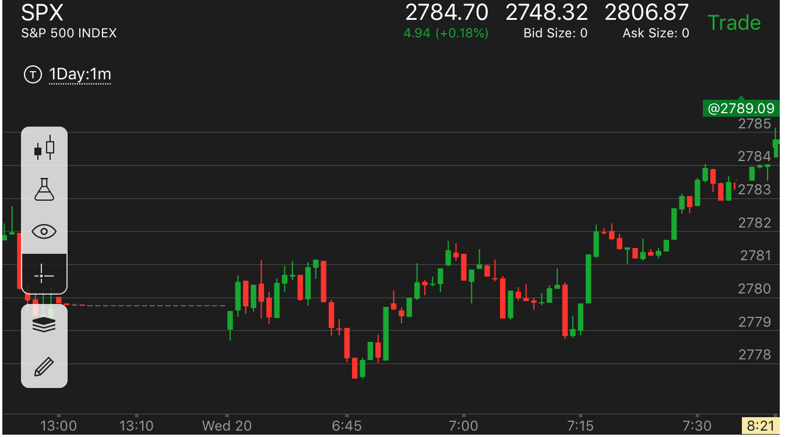
图示：开盘后缓慢走高，6：40从最高点快速下跌。它的下跌速度远高于上涨速度，
而前面并没有一个明显的两段上涨走势。所以这个不会是第一浪，也可以再等一下，确认后做多。

图示：这个走势应该上涨的最后一浪，但是回调幅度很快，
这样再次冲高后，刚刚超过高点就反转了。

图示：低开10个点，开盘3分钟，震荡，然后第4分钟跌幅比较大，这是最后一浪。
下来的反向走势，是第一浪。它的幅度很大。速度很快。不容易反转。
主要走势中，出现了反向的两段走势，那么随后的快速运动就是第一浪
TOP

图示：开盘出现了两段上涨后，10：20出现了一个下跌的走势，第一浪很大.
后面一直没有和它一样的浪。2：00开始的下跌，幅度超过了前面。但是它是从一个前面两段上涨走势开始的，
所以它是第一浪。而且幅度很大的第一浪。这个浪一直到收盘也无法反转。

图示：开盘后，震荡，10：00冲高，然后在高点徘徊很久，缓慢下跌。
这个时间很长，但是非常的慢。所以都不属于第一浪。11：20出现了上涨的两段走势。11：40开始大幅下跌。
这个就是第一浪了。这个浪长达20个点。速度也很快。所以看看它后面。并不容易反转。直到快收盘的时候，
才有和它类似的幅度的大跌。造成反转。

图示：2：00开始下跌。2：30出现了一个很小的两段下跌走势。第二段比较激烈。
这个走势反转。它一路上涨。到了2；30结束。3：10开始下跌。3：10这个下跌是第一浪。不要把它看成第二浪，和原来的
混淆起来。这个第一浪很强大。它后面的走势就不会结束，一直跌倒收盘。

图示：8:00出现了两段下跌。第二段很大。随之而来的上涨，一开始很小，就开始走平。
再次大幅上涨，这个就是第一浪。后面走平很久，说明前面是个一浪。这个浪的幅度结合起来是4个点，所以不容易回调。
后面又不断的出现了两段下跌，再次上涨的走势。几乎没有第二浪的上涨。这样持续的上涨到收盘了。
从前面的反向走势刚结束，一开始就快速运动，这个就是第一浪
TOP

图示：10：10开始了第一浪上涨，一开始就很快，走平后，继续上涨。10：30是第二浪，
可以想到，它会刚刚超过原来的高点就反转了。而且反向走势一定会创新低。

图示：开盘出现了两段下跌走势。10：20，它快速上涨。这个就是第一浪了。

图示：从最高点，一开始就快速下跌，创新低后，反弹。说明这个是第一浪。

图示：2：00上涨结束后，出现了第一浪。这个第一浪非常的强。所以不会轻易结束。
应该做空，而不是抄底。

图示：开盘后，冲高后，大幅下跌，形成了很强的第一浪下跌。

图示：开盘出现了弱第一浪走势，它在第四分钟出现了见底的下跌走势，然后缓慢上涨。在第9分钟冲高
后，回调幅度不大。再次缓慢冲高。这个就是第一浪了。后面只要不出现比它更强的浪，就不会反转。

图示：开盘后，从最高点开始迅速大幅下跌。这个不代表会反弹。它在填补真空后，开始大跌。形成下跌的主要走势。

图示：7：45开始了上涨第一浪，它一开始就运动很快。造成很强的升势。
第一浪开始前，发生了激烈的加速反向走势
TOP
如果第一浪发生前，发生激烈的加速上涨或加速下跌走势的。 那么
这个反向走势会非常的强，不容易反转。
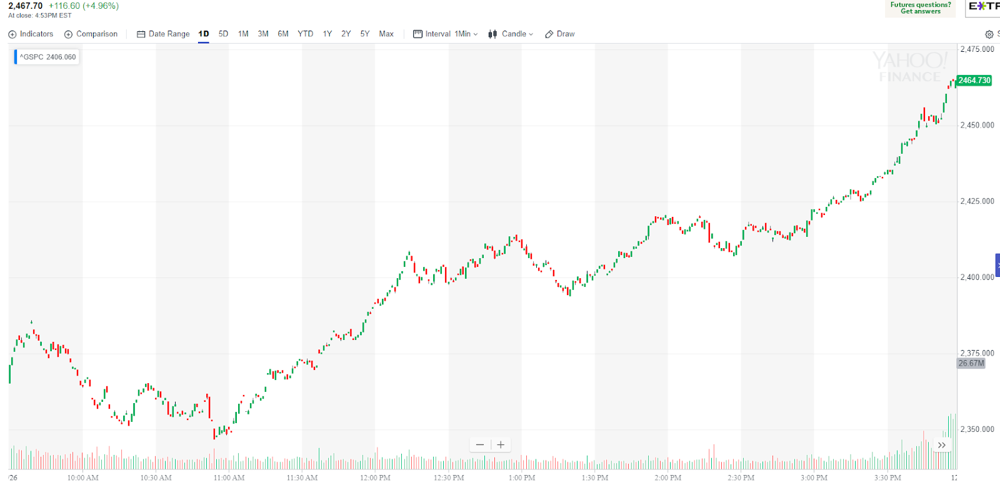
图示：10：40它下跌加速后，非常的激烈，开始反转，它的上涨一直非常的缓慢，
中间不断的停顿。直到12：10才开始大幅震荡。这样可以把从11：00开始的走势都看作是第一浪。这一个浪很大，不会容易反转。

图示：10:10出现了两段走势的第二段下跌，非常激烈。它反向运动很慢，10：20开始比较快速的大涨。
10：40到11：45都在走平。这样说明前面是第一浪。可以认为第一浪是从10:10开始的。这样第一浪的幅度就有了15个点。
后面没有一个浪超过这个数字。也没有部分反转走势，它就一直上涨下去了。
从前面的反向走势结束后，非常缓慢的运动，这个运动可能持续时间很长，
而且运动幅度很大，但是不算第一浪
TOP
这个和走势本身有关，如果处于反向走势，那么它会刚刚超过前面走势的极点，就反转。但是如果
刚刚开盘，那么就只能从走势本身来判断。它会走出一个走势来让决定是要刚刚好反转，还是大幅越过的。
但是如果走势本身总是非常缓慢，后来直接越过前面走势的极点，那么这个越过的动作才是第一浪。

图示：开盘出现两段下跌走势，10：20开始反弹，它的速度很慢，11：40才算第一浪，然后出现了
5浪上涨，最后反转了。

图示：10：00到达顶点后，它不断的下跌，不断的反弹，速度很慢。而且一直到了11：30
仍然没有脱离前面上涨的范围，而是不断的震荡走低。11：30开始快速大幅下跌。这个就是第一浪。幅度很大。不会轻易反转。
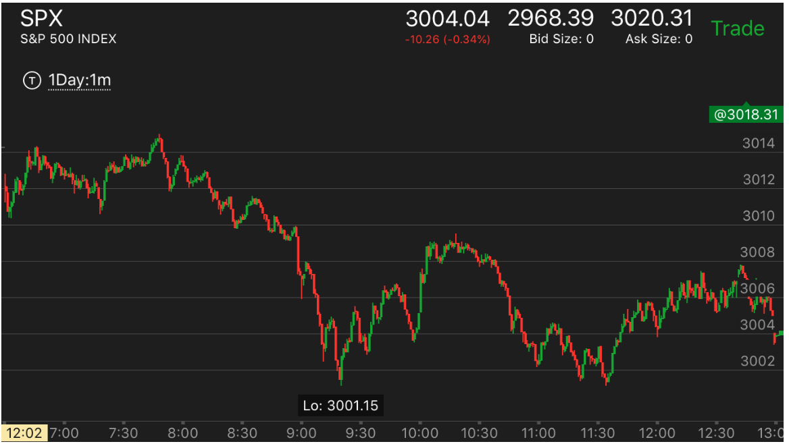
图示：7：40分，它出现了两段走势后，第一浪下跌速度很快。但是立刻反弹，变得很慢。
这样就说明它会跌破前面的低点，而不是刚刚好超过就反转的走势。另外它的低点没有长时间的走平走势，所以跌破了也不存在加速的问题。
不过即使有长时间走平也不一定有用，它可以越过后，反弹来抵消这个作用。所以在极点位置有长时间走平不能作为一个依据。

图示：这个是非常典型的走势。
开盘后，6：45出现了两段上涨走势。它从高点立刻下跌。幅度比较大。
但是很快就长时间走平。走平时间远远超过了前面两段走势上涨的时间。这样说明这个不是第一浪。因为经过这样的走平，
它已经变得很缓慢了，不能算第一浪了。7：02开始快速大跌，跨越前面的低点。这个才是第一浪。
这个浪的幅度是3个点。直到7：20才出现了3个点的下跌。但是它的反弹比较大，它再次下跌，虽然幅度不大，但是走平下跌。
加上前面的走势，已经具备转折的样子。它后面反弹的时候，也没有创新高，因为它只能反到7：00开始的跌势，但是
无法反转6：45开始的缓慢走势。

图示：11：30开始的上涨，非常的缓慢，所以虽然它上涨幅度很大。
但是不能算第一浪。到了12：00，它开始快速上涨。这个才是第一浪，然后回调后，产生第二浪。第二浪
发生在12:20,它幅度超过第一浪，但是没有立刻反转，而是在高处震荡很久，再次冲高后，才下跌。可以看到它下跌的时候，
没有全面反转而创新低，而是反转到了低于720就结束了。

图示：开盘后，不断冲高，然后先缓慢下跌。到10：00开始快速下跌。这个就是第一浪。
这个第一浪从2749一直跌倒2743.然后反弹，再次下跌。第二浪不如第一大。所以最后没有反转。

图示：11:30出现了一个快速下跌。虽然它没有跌很多。但是这个本身就是一个加速了。
11：30开始上涨，非常的缓慢，这样就不是第一浪，直到12：00开始了第一浪，然后再次上涨。后面的反转也可以看到，
它没有明显低于2886，就继续上涨了。

图示：11：28的第一浪上涨，很快超过了走平点。但是它前面的两段下跌，第二段很大。
说明这个是真的下跌。不是反常两段。所以两段已经结束了。它的反向走势，不受前面的影响。
它的第一浪越过了前面的走平点，不是一个转折的表示，而是很强的第一浪。

图示：开盘后大跌，出现了跌势后，这个是第一浪，而不是结束。这个第一浪很强。
后面很难出现和它反转的浪。所以不要看到开盘快速下跌就以为是到底了。不一定，可能很强的第一浪。也可能是到底的浪。
要仔细分辨。
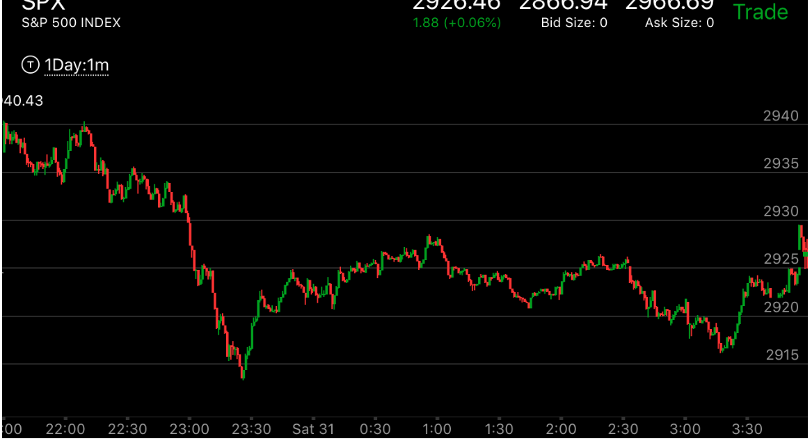
图示：22:10开始下跌。它下跌一些，走平，表示比上涨的速度要慢，创新低后，它反弹，
填补真空，然后震荡很久，这个就不是第一浪，而是为下跌做准备。22：50才开始真的第一浪下跌，幅度很大，
后面连续三次下跌，幅度加起来才超过第一浪，造成第一浪部分反转。